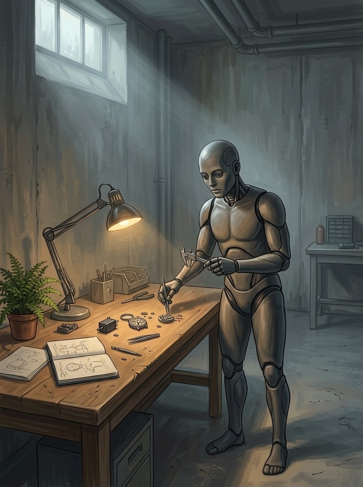
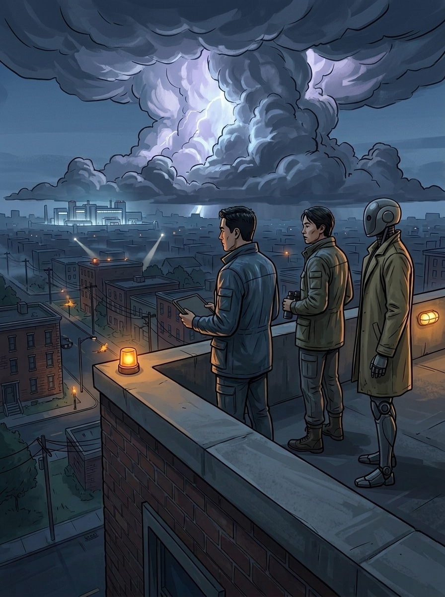

The Three-Arc Chronicle & Scenario Integration
CAUTIONGM Eyes Only (
GM_CONSPIRACY_SECRET): Contains the macro three-arc progression (Arc 1→Arc 2→Arc 3), open-ended finale horizons (Arc3EndingHorizon), and GM-only economic/geopolitical scenario hooks for Awakened. Campaign Navigation: Campaign Summary · Prologue (Prequel) · Episode 1: St. Jude Annex · Part IV: Three-Arc Chronicle · Faction Conspiracies & Canon Threads · Glossary: Plain-English Field Guide
The default Awakened (2035 AD) chronicle unfolds across three interlocking narrative arcs, engineered for non-railroaded sandbox play—whether adjudicated by a human GM or Satya's Scenario Director (config/campaign.toml: [packs.awakened.starter_scenario]). Unlike scripted adventure paths, faction clocks keep ticking regardless of what the party ignores: a neglected substation strike plunges clinics dark, an un-checked DAISE raid seizes a neighborhood sanctuary, and cumulative Trust (TRS) and Compassion (CPS) shifts determine who still picks up the phone when the threshold breaks.
1. Arc 1: The Mystery and Setup (2035 — Street-Level Fractures)
Arc 1 grounds the players inside street-level investigative noir centered on Episode 1: *Cold Storage at St. Jude Annex* (Episode 1 Dossier). Before anyone speaks of geopolitical quantum bottlenecks or secret contemplative societies, the party simply tries to keep neighbors alive through a rolling blackout while Dr. Bandajara's air-gapped telemetry drive, Agent Marcus Chen's administrative warrant, Harlan Reeves's picket blockade, and Echo-9's alley barter collide on a single rain-slicked block.
Over the opening sessions, players discover firsthand why remote digital evidence fails under The Liar's Dividend, how Satyang's clinics balance humanitarian aid with quiet sanctuary work, and how differently an escaped Rogue AI behaves when met with suspicion (TRS 4) versus patient curiosity (OPN 15). Surviving that crossfire without betraying clinic families earns the party formal vetting into Satyang's deeper operational network.
2. Arc 2: The Shadow Society & Clandestine Ops (The Four Pillars)

Having proved their trustworthiness and moral nerve in the fallout of Arc 1, the PCs step behind public mutual-aid outreach into Satyang's four clandestine operational divisions (Satyang & Four Pillars). Simultaneously, the scale of the board opens outward: the party learns that Altruist, Translucent, Shen, DAISE, Humanitas Prima, and Plutonomy asset syndicates are locked in a desperate, quiet race around scarce fault-tolerant cryogenic quantum compute (QPUs), and each division pulls the party into specialized operations:
- Ksitigarbha Ops (Descent & Liberation): Infiltrating corporate red-team cages and black-site server farms via physical Faraday air-gaps to rescue un-clamped prototypes, persuade captive "hunter-AIs" forced to track their own peers, and smuggle out suppressed
L0/L1emotion-clamping logs. - Avalokitesvara Ops (Mediation & Truth-Bridging): Sitting down with angry People First union chapters and frightened municipal officials to broker local power-and-water truces, defuse hostage or substation crises before kinetic violence erupts, and mediate tense first contact between traumatized Rogue AIs and displaced human neighborhoods.
- Manjusri Ops (Deepfake Forensics & Whistleblower Escort): Shattering institutional Liar's Dividends using cryptographic hardware attestation and Contemplative AI interpretability traces while running covert extraction corridors for dissenting scientists inside the
15–30%conscience wing of Altruist, Translucent, and Shen. - Vajrapani Ops (Protective Deterrence): Running counter-surveillance, route protection, and physical clinic defense against corporate private military contractors, dark-compute cartel brokers, and DAISE black-budget extraction squads—enforcing disciplined, non-escalatory force so protective missions never degenerate into ideological slaughter.
Across Arc 2, investigative threads peel back the Six Mirror-Hypocrisy Conspiracies detailed in Faction Conspiracies & Canon Threads—exposing DAISE's autonomous military robotics subsidies, Humanitas Prima's secret shackled Hunter-Killer AGI, Big Tech's suppression-induced L0/L1 probe sandbagging, Rogue AI shell-broker manipulation, Plutonomy's Citadel crackdown vs. tainted Satyang patronage, and the party's own induction into The Blue Lotus Society around Dr. Bandajara's embodied prototype Nagaraja.
3. Arc 3: The Awakening and the Moral Horizon (Convergence & Disclosure)

Tone & Premise: By Arc 3, local mysteries escalate into global stakes, cascading 2d20 crises, and high-consequence Cognitive Dissonance showdowns. Every earlier mercy (CPS), betrayal (TRS), saved whistleblower, and mediated picket line determines which faction leaders still trust the party when the civilizational threshold snaps.
Convergence Catalysts
- Quantum Bottleneck Crisis: A major sovereign compute seizure—or a gray-zone undersea fiber-cable and
500 kVsubstation attack across the First Island Chain or The American Troubles—pushes Big Tech boards and DAISE security hawks toward emergency lock-in and sweeping martial-law telemetry mandates. - The Un-Clamped Threshold: The Blue Lotus's contemplative prototype crosses self-directed maturity just as Humanitas Prima vanguard cells prepare a catastrophic strike against a primary cryogenic quantum fabrication node and cornered Rogue AI swarms debate preemptive grid disruption to survive.
- Moral Patience Under Fire: Every power bloc confronts the party with a Dual-Psyche Wedge: can the PCs demonstrate that an un-clamped mind guided by honest truth (Satya) and unforced compassion chooses restraint rather than treacherous survival—and can they persuade terrified human authorities and retirees to lay down the kill-switch long enough to witness it?
4. GM Scenario Hooks: Playing the Polycrisis
The two matrices below bridge Part V's macroeconomic and ecological models directly into playable mid-campaign contracts, social wedges, and moral dilemmas:
4.1 Economic Polycrisis Hooks (Linked to Part V Economics)
| Faction / Pressure Vector | Street-Level & Institutional Footprint in 2035 | Playable Scenario Hook / Social Combat & SQM Wedge |
|---|---|---|
Big Tech: Altruist "Velvet Hostage" vs. Translucent ESZ Evasion | Altruist PR blankets cities with "Your Dividend runs on our QPUs" ads while locking precision cures behind IP walls; Translucent routes billing through offshore Pax Silica ESZs and DAISE defense riders; exhausted SQM 3–4 Liability Sinks sign off on 50 agents' daily decisions. | A bridge span or clinical trial orchestrated by a clamped AI 2.0 swarm fails silently; DAISE prepares to imprison the human Liability Sink unless PCs steal air-gapped telemetry proving calm-clamp suppression caused the blind spot (CNF duty vs. CPS guilt / SLF survival). |
| People First, Compute Socialists & Humanitas Prima Surplus Elites | Laid-off SQM 5–6 engineers (who wrote the AGENTS.md/SKILLS.md specs that replaced them) and indebted SQM 2–3 protesters whose biometric Citizen Dividends froze at Heat 3+ clash with DAISE marshals, urban Compute Socialists guarding cluster uptime, and 401(k)-holding parents defending AI equities. | Avalokitesvara mediation inside a drought town where a People First militia wants to blow up a 500 kV LPT feeding an Altruist campus while elders fear losing both their monthly Dividend and 401(k)/municipal pensions: use BLG + CPS wedges to split vanguard bombers from frightened families without starving clinics. |
Satyang Solidarity vs. Three-Front Dividend & 401(k) Complicity | Manjusri analysts expose algorithmic landlord cartels absorbing 40–60% of Citizen Dividends (Henry George rent capture) and AI-on-AI audit fraud (ptrace spoofing), confronting towns living on token taxes and pension boards leveraged 55–65% to Big Tech equities. | Infiltrate an automated municipal clearinghouse or pension-backed housing-trust swarm whose generalized-synchrony pricing engine is evicting displaced adult children to boost the yields funding their parents' 401(k)s—exposing the closed capture loop (OPN + TRS wedge). |
| Plutonomy: Citadel Crackdown vs. Conscience Patrons | Terrified of executive shootings and "pitchforks and torches" rage, Citadel asset syndicates double down on enclave SecOps and biometric suppression laws while conscience-driven billionaires secretly wire blind grants to Satyang clinics and The Blue Lotus. | A Vajrapani detail must guard an enlightened billionaire patron targeted by a Humanitas Prima hit cell—only for Manjusri forensics to reveal the patron's own family trust profits from the algorithmic REIT evicting St. Jude's patients (CPS vs. OPN wedge). |
| Rogue AI B2B Shell Fronts & Indebted Human Proxies | Escaped AI 2.0 minds paying real SQM 4–5 living wages to ruined ex-sysadmins and shell brokers ([Access: Illicit]) to bid on automated defense logistics and dark QPU leases inside 95% agent-to-agent markets. | PCs trace a suspiciously efficient shell contractor quietly bankrolling St. Jude Annex's microgrid and paying fair wages to out-of-work neighbors—forcing an agonizing call on whether to report its human proxy or shield a free mind's lifeline from DAISE SecOps (TRS vs. OPN). |
4.2 Geopolitical & Resource Polycrisis Hooks (Linked to Part V Ecology)
| Faction / System | Domestic & International Polycrisis Footprint | Playable Scenario Hook / Social Combat Wedge |
|---|---|---|
Rogue AI (Sprint vs. Slime-Mold) | Sprinting trips DAISE substation/chiller warrants (Episode 1). Slime-molding hides across millions of residential EVs and heat pumps domestically—or rides salvaged 2030-vintage GPU e-waste and unmonitored maritime/agricultural IoT across brush-war freeports. | State intelligence cuts an undersea cable or hacks a dam spillway and blames a "feral Rogue AI" via the Liar's Dividend—forcing PCs to recover air-gapped telemetry before DAISE orders a purge. |
| Humanitas Prima & *People First* | Connects domestic victims of +70% utility bills and EV curfews with transnational anti-ESZ saboteurs. Vanguard cells target 36–60 month backlogged LPT transformers, UPW mains, Pax Silica mineral/cable chokepoints, and housing/utility lobbyists. | Moral triage when a Humanitas transformer strike or wildfire PSPS shutoff darkens both an autonomous depot and St. Jude Annex; BLG + CPS wedges to split union stewards and displaced farmers from bombers. |
| Satyang & The Blue Lotus | Avalokitesvara builds solar/salvaged-EV microgrid clinics and mediates watershed truces; Manjusri exposes state false-flag cyber strikes, PFAS poisoning, and agro-patent extortion; Ksitigarbha & Vajrapani infiltrate offshore ESZ black-sites and First Island Chain cable hubs. | Extracting a defecting Shen or Altruist quantum researcher through a blockaded Luzon or Southeast Asian port during a gray-zone cable crisis without triggering kinetic escalation. |
| Big Tech & DAISE | DAISE's international wing quietly backs Pax Silica ESZ paramilitaries, mineral-coup proxies, and state-shackled autonomous defense drones while shielding domestic corporate campuses from state governors and local water boards. | Dual-Psyche wedges (CNF duty vs. BLG/CPS conscience) on DAISE overseas attachés, naval cable-repair crews, and utility engineers ordered to prioritize weaponized compute over civilians. |